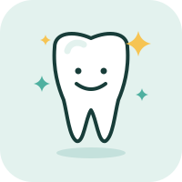

심미치과
치아의 색, 모양, 배열 등 심미적인 고민을 상담합니다. 얼굴형과 잇몸 라인에 어울리는 자연스러운 방향으로 치료 계획을 안내합니다.
자세히 보기
주요 진료
- 라미네이트: 치아 앞면에 얇은 세라믹을 붙여 모양과 색을 개선
- 올세라믹 크라운: 금속 없이 자연치에 가까운 색의 보철
- 레진 수복: 깨지거나 벌어진 앞니를 치아색 재료로 보완
이런 분께
- 치아 색이 고르지 않은 분
- 앞니가 깨졌거나 벌어진 분
- 오래된 금속 보철을 바꾸고 싶은 분